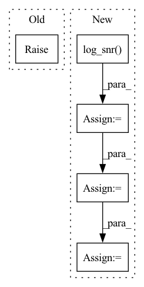

Pattern ID :9429
Before Change
raise NotImplementedError
def q_posterior(self, x_start, x_t, t):
raise NotImplementedError
def q_sample(self, x_start, t, noise = None):
noise = default(noise, lambda: torch.randn_like(x_start))After Change
https://openreview.net/attachment?id=2LdBqxc1Yv&name=supplementary_material
µ still has to be done (eq. 32)
log_snr = self.log_snr(t)
log_snr_next = self.log_snr( t_next)
log_snr, log_snr_next = map(pad_dim_right, (log_snr, log_snr_next))
alpha, sigma = log_snr_to_alpha_sigma(log_snr)
alpha_next, sigma_next = log_snr_to_alpha_sigma(log_snr_next)
posterior_mean = None // todo, eq 32 from above, but done in a way to receive the x_start from predict_start_from_noise, since the x_start needs to be clipped (by dynamic thresholding?)
// following (eq. 33)
posterior_variance = (sigma_next ** 2) * -expm1(log_snr_next - log_snr)
posterior_log_variance_clipped = log(posterior_variance, eps = 1e-20)
return posterior_mean, posterior_variance, posterior_log_variance_clipped
def q_sample(self, x_start, t, noise = None):In pattern: SUPERPATTERN
Frequency: 3
Non-data size: 5
Instances Fragment ID: 33677442
Project Name: lucidrains/imagen-pytorch
Commit Name: 42a8152aef33f27df7fb33d910139d702a814206
Time: 2022-05-28
Author: lucidrains@gmail.com
File Name: imagen_pytorch/imagen_pytorch.py
M Class Name: GaussianDiffusionContinuousTimes
N Class Name: GaussianDiffusionContinuousTimes
M Method Name: q_posterior(5)
N Method Name: q_posterior(4)
M Parent Class: GaussianDiffusion
N Parent Class: GaussianDiffusion
M File Name: imagen_pytorch/imagen_pytorch.py
N File Name: imagen_pytorch/imagen_pytorch.py
M Start Line: 306
M End Line: 306
N Start Line: 306
N End Line: 321
Before Change
raise NotImplementedError
def q_sample(self, x_start, t, noise=None):
raise NotImplementedError
def predict_start_from_noise(self, x_t, t, noise):
raise NotImplementedErrorAfter Change
def q_sample(self, x_start, t, noise = None):
noise = default(noise, lambda: torch.randn_like(x_start))
log_snr = self.log_snr( x_start, t)
log_snr = pad_dim_right(log_snr, x_start)
alpha, sigma = log_snr_to_alpha_sigma(log_snr)
return alpha * x_start + sigma * noise
def predict_start_from_noise(self, x_t, t, noise): Fragment ID: 33677412
Project Name: lucidrains/imagen-pytorch
Commit Name: 847a8715f2c36a967631ca21e8d2b53058b2c745
Time: 2022-05-27
Author: lucidrains@gmail.com
File Name: imagen_pytorch/imagen_pytorch.py
M Class Name: GaussianDiffusionContinuousTimes
N Class Name: GaussianDiffusionContinuousTimes
M Method Name: q_sample(4)
N Method Name: q_sample(4)
M Parent Class: GaussianDiffusion
N Parent Class: GaussianDiffusion
M File Name: imagen_pytorch/imagen_pytorch.py
N File Name: imagen_pytorch/imagen_pytorch.py
M Start Line: 285
M End Line: 285
N Start Line: 304
N End Line: 308
Before Change
raise NotImplementedError
def predict_start_from_noise(self, x_t, t, noise):
raise NotImplementedError
// norms and residuals
After Change
return alpha * x_start + sigma * noise
def predict_start_from_noise(self, x_t, t, noise):
log_snr = self.log_snr( t)
log_snr = pad_dim_right(log_snr, x_t)
alpha, sigma = log_snr_to_alpha_sigma(log_snr)
return alpha * x_t - sigma * noise
// norms and residuals Fragment ID: 33677455
Project Name: lucidrains/imagen-pytorch
Commit Name: 847a8715f2c36a967631ca21e8d2b53058b2c745
Time: 2022-05-27
Author: lucidrains@gmail.com
File Name: imagen_pytorch/imagen_pytorch.py
M Class Name: GaussianDiffusionContinuousTimes
N Class Name: GaussianDiffusionContinuousTimes
M Method Name: predict_start_from_noise(4)
N Method Name: predict_start_from_noise(4)
M Parent Class: GaussianDiffusion
N Parent Class: GaussianDiffusion
M File Name: imagen_pytorch/imagen_pytorch.py
N File Name: imagen_pytorch/imagen_pytorch.py
M Start Line: 288
M End Line: 288
N Start Line: 311
N End Line: 314